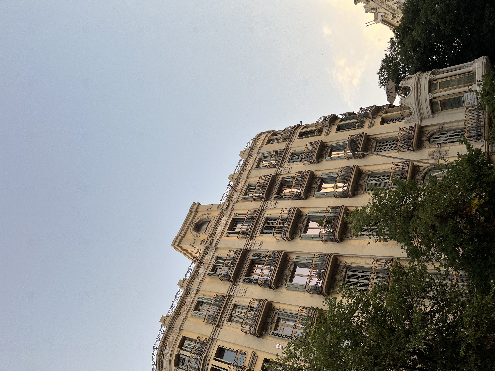

Je recherche une alternance en design produit à partir de septembre 2026.
J'ai choisi l'alternance parce que c'est, à mes yeux, la façon la plus cohérente d'apprendre ce métier :
confronter ce qu'on construit en cours à la réalité d'un projet, comprendre les contraintes d'une
équipe,
et progresser en faisant.
Mon travail s'articule autour de la manière dont les objets influencent nos comportements et nos usages.
J'essaie d'y répondre avec une approche ancrée dans la durabilité, en allant chercher autant du côté des
techniques artisanales que des outils numériques. J'aime comprendre comment les choses fonctionnent
avant
de chercher à les concevoir. Au sein d'une équipe, j'observe, j'échange et je m'implique sur ce qui se
construit collectivement.
Cet été, j’ai intégré le studio Goons, une expérience de design en studio qui m’a permis de me
confronter concrètement aux étapes d’un projet et aux contraintes de production. Cela a renforcé mon
envie
de poursuivre dans ce type de pratique, au plus près du réel et du processus de conception.
Compétences
- Modélisation 3D (Rhino, Fusion 360)
- Rendu (Keyshot, Blender)
- Maquettage & Prototypage
- Impression 3D & Découpe Laser
- Suite Adobe (Photoshop, InDesign,
Illustrator, Lightroom, Premiere pro, Fresco)
- Bases en design d’interface (Figma, vibe
coding)
Formation
- Diplôme de design bac +5, spécialité
design
produit. L’École de design Nantes Atlantique Septembre
2023 - actuellement.
- Baccalauréat général, spécialités SES et
Arts plastiques Lycée Les Bourdonnières
Expériences
- GOONS — Stagiaire design & communication
- Édit — Responsable pôle association 2026
- Super U — Employée commerciale - Septembre
&
Octobre 2025
- Le 11 — Serveuse polyvalente - Été 2023 &
2024
- Parc des mimosas — Agent d'entretien Août
2022
Je recherche une alternance en design produit à partir de septembre 2026.
J'ai choisi l'alternance parce que c'est, à mes yeux, la façon la plus cohérente d'apprendre ce métier : confronter ce qu'on construit en cours à la réalité d'un projet, comprendre les contraintes d'une équipe, et progresser en faisant.
Mon travail s'articule autour de la manière dont les objets influencent nos comportements et nos usages. J'essaie d'y répondre avec une approche ancrée dans la durabilité, en allant chercher autant du côté des techniques artisanales que des outils numériques. J'aime comprendre comment les choses fonctionnent avant de chercher à les concevoir. Au sein d'une équipe, j'observe, j'échange et je m'implique sur ce qui se construit collectivement.
Cet été, j’ai intégré le studio Goons, une expérience de design en studio qui m’a permis de me confronter concrètement aux étapes d’un projet et aux contraintes de production. Cela a renforcé mon envie de poursuivre dans ce type de pratique, au plus près du réel et du processus de conception.
Compétences
- Modélisation 3D (Rhino, Fusion 360)
- Rendu (Keyshot, Blender)
- Maquettage & Prototypage
- Impression 3D & Découpe Laser
- Suite Adobe (Photoshop, InDesign, Illustrator, Lightroom, Premiere pro, Fresco)
- Bases en design d’interface (Figma, vibe coding)
Formation
- Diplôme de design bac +5, spécialité design produit. L’École de design Nantes Atlantique Septembre 2023 - actuellement.
- Baccalauréat général, spécialités SES et Arts plastiques Lycée Les Bourdonnières
Expériences
- GOONS — Stagiaire design & communication
- Édit — Responsable pôle association 2026
- Super U — Employée commerciale - Septembre & Octobre 2025
- Le 11 — Serveuse polyvalente - Été 2023 & 2024
- Parc des mimosas — Agent d'entretien Août 2022



Édit - Junior Entreprise
Edit est une structure étudiante conçue pour professionnaliser les étudiants de L’École de design Nantes Atlantique. Nous proposons des missions rémunérées pour des clients extérieurs (entreprises, collectivités, associations, etc.), afin d’acquérir une expérience concrète et valorisante.
Mon rôle
En tant que Responsable du pôle associatif, j’organise et encadre une équipe d’étudiants pour développer
des projets porteurs de sens, à la fois créatifs et professionnels.